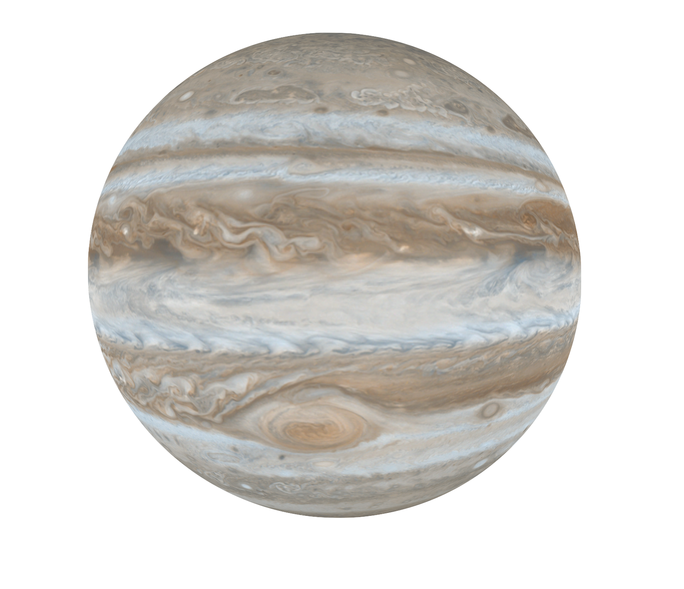
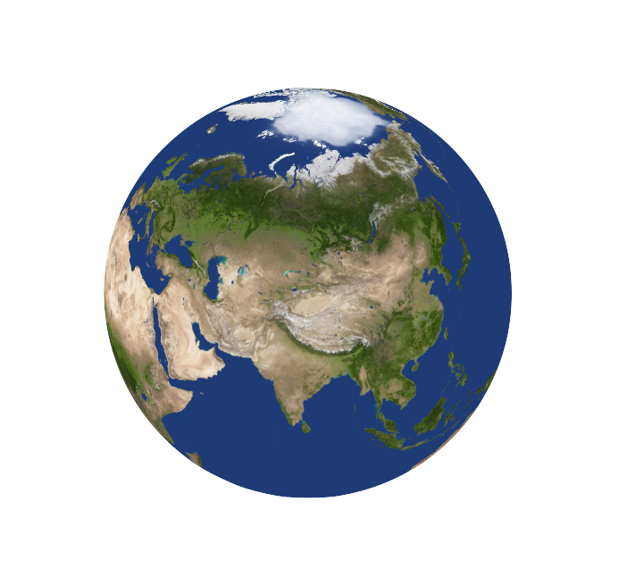
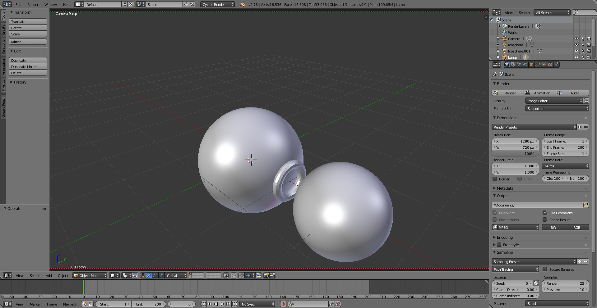
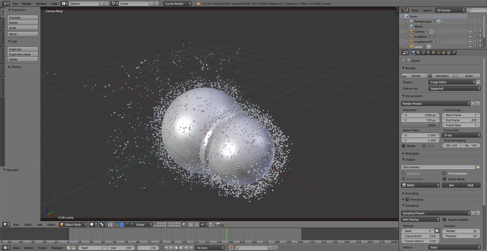
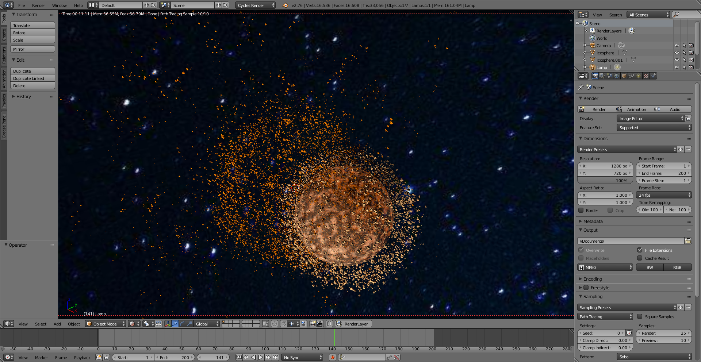
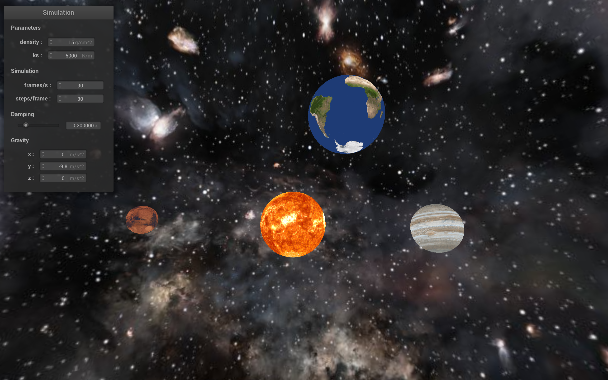
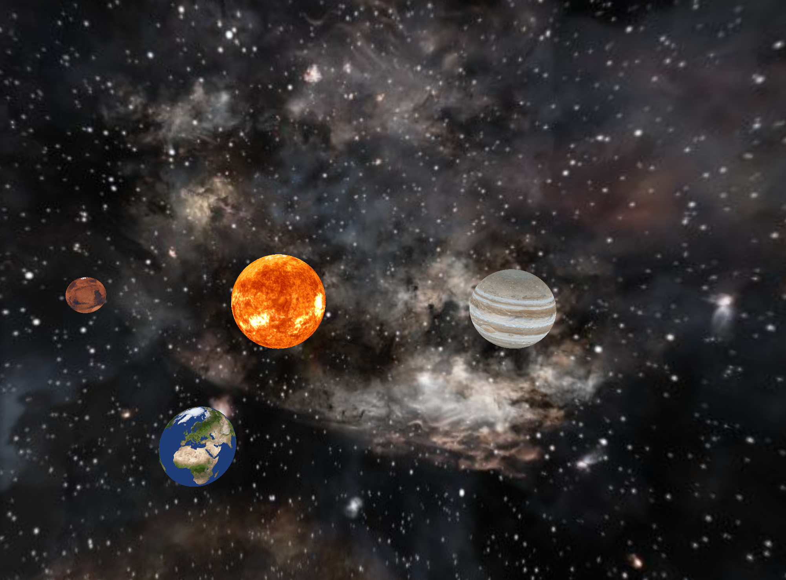

Final Project Video
Slides
Abstract
We implemented a physics-based simulation that produces a photorealistic visual rendering of the solar system which utilizes several techniques we have learned in this class including meshes, shading, texture mapping and physics simulation. We also explored interplanetary interactions such as collisions and orbiting.
Technical approach
1. Modeling Planets & Texture Mapping
We implemented our gravity-based solar system physics simulation on nanoGUI. We first implemented sphereMesh objects with texture mapping of images of planet surfaces on them.
|  |  |
2. Gravity and Motion Simulation
We successfully modeled our planets using sphere meshes with texture mapping. A planet is represented using a Sphere class. The sphere contains attributes like mass, radius, position of origin, and a “prev” field which is used to calculate the initial momentum so that the planets won’t collapse to each other. The results are as follows:

To get a smooth and stable motion animation, we implemented Verlet Integration.
We also experimented with interplanetary orbiting.

3. Blinn-Phong Shading
We implemented a light source in the body of the Sun and used Blinn-Phong shading for the surfaces of the planets.
4. Collisions and Explosions
We implemented a physics-based collision simulation based on the laws of conservation of momentum. However, we did not have enough time to implement the explosion of planets into pieces but we tried to render that using Blender.
We also explored the pipeline of artistically rendering planet collisions using Blender. When two planets collide, we inserted a ring-like structure called Torus between the two spheres to create the effects of explosions that emit light during the collision.
|

|

|
We also applied shading that fades the planets as they disintegrate into pieces. We render the pieces as icospheres with the same shading as the planet with random sizes and positions. We also set their motion such that they travel outwards in every direction from the center of each planet.
|
|

|
To make the rendering even more realistic, we need to simulate the geological compositions and activities of the planet where there are terrains on the surface of the planets and magma erruptions in response to the other planet's gravity as they approach each other. To achieve this, we implemented bump mapping and displacement mapping on the surface of the planets. The shading on the surface of the planet also changes as they approach each other.

We then specify the light sources where Blender handles the ray tracing. We also change the background of the space. It takes about an hour to render the 200 frames shown below.

Results

|
 |

|

|

|
 |

|

|

|

|

References
- Differential Equations for Planet Orbits:
- - https://www.youtube.com/watch?v=p_di4Zn4wz4
- Collision:
- - https://github.com/yuanming-hu/taichi_mpm
- - https://www.youtube.com/watch?v=ri_xEO5Xy2Y
- - https://github.com/tom1092/Planets-collision
- Galaxy Simulation:
- - https://tom1092.github.io/Planets-collision/
- Textures & background:
- - https://www.solarsystemscope.com/textures/
Contributions from each team member
Guowei Yang
He implemented the gravity-based physics simulation for the solar system, texture mapping and interplanetary orbiting.
Violet Fu
She implemented the light source of the sun and the shading for the planets.
Jia Ze Yu
He drafted the rendering pipeline for this physics simulation and implemented the planet collisions. He also completed the necessary documentations (webpage reports).